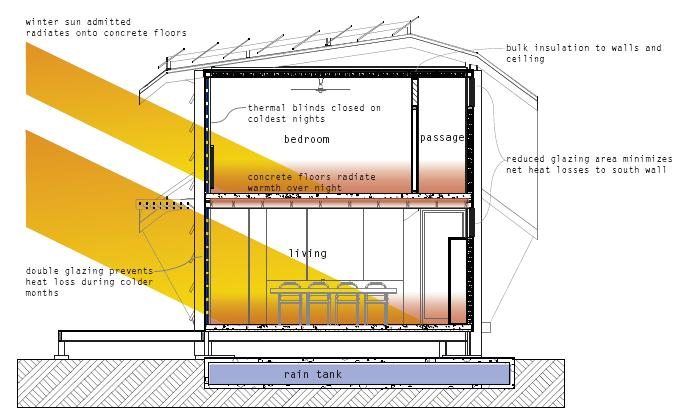
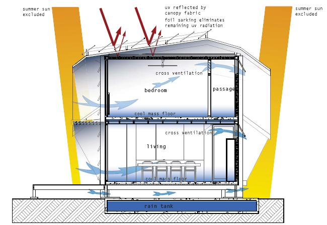

Σύμφωνα με τη νομοθεσία 2006/32/EC Directive, καθορίστηκαν οι υποχρεώσεις των κρατών μελών της Ευρωπαϊκής Ένωσης για τη διαχείριση της ενέργειας και τη μείωση των εκπομπών διοξειδίου του άνθρακα και αυτό οδήγησε στη δημιουργία μεγάλου ενδιαφέροντος ως προς τα ενεργειακά αποδοτικά κτήρια και την παθητική τεχνολογία για κτήρια. Σε αυτή την κατεύθυνση, η ζήτηση των Σπιτιών Χαμηλής Ενεργειακής Κατανάλωσης έχει αυξηθεί. Ένα Σπίτι Χαμηλής Ενεργειακής Κατανάλωσης παρέχει θερμική άνεση, υγιή διαβίωση, και χαμηλότερο κόστος για θέρμανση. Για παράδειγμα, τα Σπίτια Χαμηλής Ενεργειακής Κατανάλωσης στη Δανία, παρουσιάζουν μείωση στο ποσό των λογαριασμών για θέρμανση σε περίπου μόνο 23 ευρώ το μήνα ή σε ετήσια βάση και αυτό το ποσό είναι κατά προσέγγιση ίδιο με το ποσό που πληρώνει μια οικογένεια στη Δανία για άδεια τηλεόρασης. Παράλληλα, οι τιμές εμπίπτουν στο όρια των τιμών των κανονικών σπιτιών. Τα Κτήρια Χαμηλής Ενεργειακής Κατανάλωσης αξιοποιούν μορφές ενέργειας που είναι ανανεώσιμες, έχουν καλύτερη μόνωση σε όλο το χώρο του κτηρίου, τα παράθυρα είναι συνήθως καλύτερης ποιότητας από ότι αυτά που κανονικά ορίζονται από τους κανονισμούς οικοδόμησης, τα επίπεδα συμπίεσης αέρα είναι τα καλύτερα και χρησιμοποιούνται συστήματα εξαερισμού για να διατηρείται μια σταθερή θερμοκρασία στο χώρο.
Οι μορφές ανανεώσιμων πηγών ενέργειας περιλαμβάνουν τα ηλιακά συστήματα για τη θέρμανση του νερού, τα φωτοβολταϊκά συστήματα και την αιολική ενέργεια. Το ηλιακό σύστημα θέρμανσης νερού ή αλλιώς ο ηλιακός θερμοσίφωνας, στην πιο απλή του μορφή είναι μια οριζόντια πλάκα με επένδυση από μέταλλο, η οποία είναι μονωμένη στο κάτω μέρος και έχει σωλήνες που περιέχουν το νερό σε όλη της την επιφάνεια. Καθώς η πλάκα ζεσταίνεται από τον ήλιο, ζεσταίνεται και το νερό που περιέχεται μέσα στους σωλήνες. Το νερό κυκλοφορεί από την πλάκα του ηλιακού θερμοσίφωνα στο σύστημα ζεστού νερού του κτηρίου και πίσω. Τα φωτοβολταϊκά κύτταρα ή φωτοβολταϊκές πλάκες αποτελούνται από ειδικά σχηματισμένα κύτταρα που παράγουν ηλεκτρικό φορτίο όταν πέφτει το φως πάνω τους. Αυτά είναι η ίδια τεχνολογία την οποία χρησιμοποιεί μια υπολογιστική μηχανή για ενέργεια ώστε να λειτουργήσει, μόνο που στην περίπτωση των φωτοβολταϊκών αυτό γίνεται σε μεγαλύτερη κλίμακα. Δεδομένου ότι η ζήτηση και πώληση των φωτοβολταϊκών έχει αυξηθεί, αυτόματα μειώνεται το ολικό κόστος εγκατάστασής τους, επιτρέποντας έτσι τη χρήση φωτοβολταϊκών από περισσότερα προγράμματα, συμπεριλαμβανομένων και των σπιτιών, για δική τους χρήση. Οι ανεμογεννήτριες παράγουν καθαρή και ανανεώσιμη ενέργεια, χωρίς επιβλαβείς εκπομπές και έτσι μπορούν να βοηθήσουν στη μείωση ενός σημαντικού ποσοστού των εκπομπών διοξειδίου του άνθρακα.
Τα Σπίτια Χαμηλής Ενεργειακής Κατανάλωσης χρησιμοποιούν τον Παθητικό Ηλιακό Σχεδιασμό, τον ειδικό προσανατολισμό των παραθύρων και συστήματα εξαερισμού για αποκατάσταση της θερμοκρασίας στο εσωτερικό του σπιτιού. Ο Παθητικός Ηλιακός Σχεδιασμός στα Σπίτια Χαμηλής Ενεργειακής Κατανάλωσης βασίζεται σε δύο αρχές, στο ότι “αφήνει τον ήλιο να μπαίνει στο σπίτι” και μετά “δε επιτρέπουν να βγει έξω”. Η μόνωση γίνεται στο εξωτερικό περίβλημα ενός κτηρίου, για να μειώσει σημαντικά τη μεταφορά θερμότητας διαμέσου των τοίχων, της στέγης και του δαπέδου. Το εξωτερικό περίβλημα πρέπει να γίνει αεροστεγές με προσεκτική δουλειά και αρκετή λεπτομέρεια, προκειμένου να περιορίζει τις απώλειες θερμότητας στο ελάχιστο δυνατό και να διατηρεί μια άνετη θερμοκρασία αέρα στο εσωτερικό του σπιτιού. Σχετικά με τα παράθυρα, ο νότιος προσανατολισμός είναι ο καταλληλότερος. Τα παράθυρα πρέπει να είναι μεγάλα όταν το κλίμα της περιοχής είναι δροσερό, μικρά και τοποθετημένα ψηλά όταν τα καλοκαίρια είναι ζεστά και ξηρά. Δεν πρέπει να υπάρχουν πολλά παράθυρα που να αντικρίζουν την ανατολή και ακόμα λιγότερα πρέπει να βρίσκονται προς τη δύση. Στα ζεστά, ξηρά κλίματα δεν πρέπει να υπάρχει κανένα ανατολικό ή δυτικό παράθυρο. Περαιτέρω, για επίτευξη των χαμηλότερων επιπέδων κατανάλωσης ενέργειας (κάτω από 30-40 kWh/(m².a)) από τα νοικοκυριά, χρειάζονται συστήματα εξαερισμού που διατηρούν μια σταθερή θερμοκρασία στο χώρο, αλλιώς θα υπάρχει απώλεια ενέργειας από τον εξαερισμό και διαρροές αέρα. Σε μερικές περιπτώσεις, ακόμη και η θέρμανση δωματίου μπορεί να παρασχεθεί από ένα σύστημα εξαερισμού. Η αποδοχή για χρήση συστημάτων εξαερισμού και συστημάτων θέρμανσης θα επηρεάσουν έντονα τις πιθανότητες της ευρείας διάδοσης των κτηρίων με πολύ χαμηλή ενεργειακή κατανάλωση.
Η συσχέτιση ενός κτηρίου με τις εξωτερικές συνθήκες καθ όλη τη διάρκεια του έτους, είναι πολύ σημαντικός παράγοντας που πρέπει να λαμβάνεται υπόψη στα Σπίτια Χαμηλής Ενεργειακής Κατανάλωσης. Σε μια παραδειγματική περίπτωση, θα πρέπει ο παθητικός ηλιακός σχεδιασμός να καλύπτει τις ανάγκες για θέρμανση σχεδόν όλου του χώρου του κτηρίου. Οι προεξοχές των παραθύρων πρέπει να διαμορφώνονται με τέτοιο τρόπο ώστε να επιτρέπουν την είσοδο του χαμηλού ηλιακού φωτός το χειμώνα και να δημιουργούν σκιά από τον καλοκαιρινό ήλιο (δείτε τις εικόνες 5 και 6 αντίστοιχα). Το μονωμένα πατώματα από τσιμέντο παρέχουν θερμική μάζα (Εικόνα 5). Τα ψηλά επίπεδα μόνωσης είναι επίσης σημαντικό χαρακτηριστικό του σχεδιασμού. Όλα τα παράθυρα και οι πόρτες να είναι από διπλά τζάμια. Τα παράθυρα όταν είναι κλειστά σφραγίζουν πολύ καλά και όταν είναι ανοικτά συμπεριφέρονται ως σαν μεγάλες περσίδες (φυλλαράκια παραθυρόφυλλων). Τα παντζούρια, χρησιμοποιούνται για επιπρόσθετη θερμική άνεση και για εξασφάλιση πιο ψηλών θερμοκρασιών για τις δροσερές νύχτες. Τα μικρότερα παράθυρα διευκολύνουν τον εξαερισμό και την απαραίτητη λειτουργία της βαλβίδας εκτόνωσης (‘relief valve’) για αντιμετώπιση της υπερθέρμανσης το καλοκαίρι (Εικόνα 6). Δεν προτείνονται συστήματα κλιματισμού για το σπίτι. Η ψύξη παρέχεται από ανεμιστήρες οροφής, ρεύματα αέρα (cross breezes) και από τη θερμική μάζα του πατώματος.
Όλα τα κτήρια που θα κτιστούν μετά τις 31 Δεκεμβρίου 2018 στα κράτη μέλη της Ευρωπαϊκής Ένωσης θα πρέπει να παράγουν την ενέργεια που θα καταναλώνουν. Το Ευρωπαϊκό Κοινοβούλιο τροποποίησε τη συμφωνία του 2002 για την Ενεργειακή Αποδοτικότητα των Κτηρίων και έδωσε εντολή για περισσότερες δημόσιες επενδύσεις στα ενεργειακά αποδοτικά κτήρια. Επίσης, το Κοινοβούλιο καθοδήγησε τα κράτη μέλη ώστε να θέσουν δικούς τους εθνικούς στόχους για τα ήδη υπάρχοντα κτήρια. Εάν τα κράτη μέλη πετύχουν την ολοκλήρωση αυτού του στόχου, τότε θα υπάρχουν κτήρια με μηδενική ζήτηση ενέργειας, δηλαδή ενεργειακά αυτόνομα, σε όλη την Ευρωπαϊκή Ένωση μετά από το 2018. Τα ενεργειακά αυτόνομα κτήρια ορίζονται ως τα κτήρια στα οποία η γενική ετήσια κατανάλωση ενέργειας είναι ίση ή λιγότερη από την ενέργεια που προέρχεται από ανανεώσιμες πηγές ενέργειας. Επιπλέον, η ενεργειακή απόδοση των κτηρίων θα αναβαθμιστεί για να καλύψει τις ελάχιστες απαιτήσεις ενεργειακής απόδοσης, όταν τα κτήρια ανακαινίζονται ή όταν αντικαθίστανται άλλα στοιχεία της οικοδομής και τεχνικές υπηρεσίες (π.χ. παράθυρα, συστήματα κεντρικής θέρμανσης ή συστήματα κλιματισμού). Η Ευρωπαϊκή Επιτροπή καθιέρωσε μια κοινή μεθοδολογία για τον υπολογισμό της ενεργειακής απόδοσης των κτηρίων τον Μάρτιο του 2010.